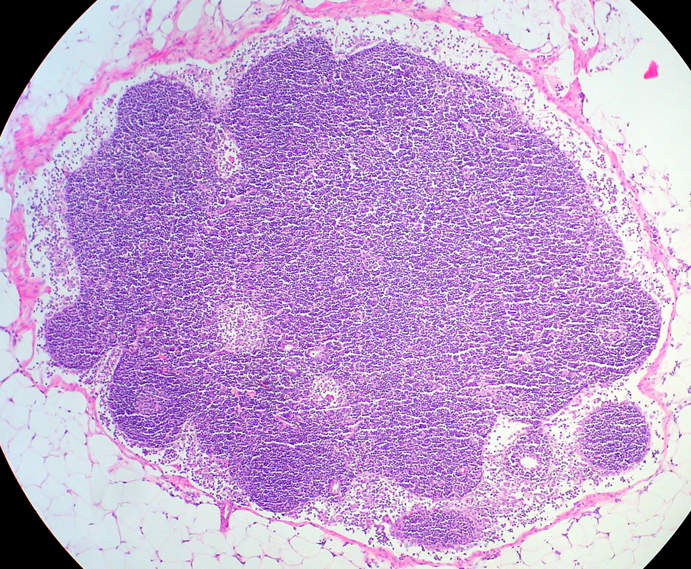

04. Blood groups, lymph and immune defense
An injured person loses blood through a contaminated wound. Replacing red cells may restore oxygen-carrying capacity, but the replacement cells must survive contact with the recipient's antibodies. In the injured tissue, fluid and microbial material must be drained; an immune response must recognize the invading material without destroying every neighboring cell. These tasks share a question: what encounters what, in which compartment, and with what consequence? A blood-group label, a swollen lymph node, and a measured antibody concentration answer different parts of that question.
The topic sequence follows official NPTEL lectures L10–L12. Timestamped captions and all ten existing contact sheets, plus nine individually inspected stills, supply bounded source evidence. Continuous audio/video was not reviewed. Corrections and research context are attributed locally; set-based compatibility logic, fluid-accounting examples and controlled SVG sequences are original teaching constructions. They are not patient-selection software or measured biological trajectories. Source scope.
4.1 Transfusion begins with an encounter L10 00:41
A transfusion transfers donated blood or a prepared blood component into a recipient's circulation. A red-cell component supplies erythrocytes, the hemoglobin-containing cells that carry oxygen. Plasma is the fluid component of blood, including dissolved proteins such as antibodies and coagulation factors. Separating blood into components changes which biological material is being delivered. The same donor–recipient labels can consequently give different compatibility answers for red cells and for plasma.
An antigen is a molecular structure specifically recognized by an antibody or an antigen receptor. An antibody, or immunoglobulin, is a recognition protein made by the B-cell lineage. An epitope is the particular part of an antigen contacted by a recognition site. An antigen need not be a whole microbe, and recognition alone does not guarantee either protection or harmful inflammation. In blood grouping, the relevant structures are antigens exposed at the red-cell surface and antibodies present in plasma.
The lecture's older terms agglutinogen and agglutinin name an antigen capable of participating in agglutination and an antibody that promotes it. Agglutination is antibody-mediated clumping of cells or particles. Multivalent binding can bridge neighboring surfaces. Hemolysis is red-cell destruction; it is a different event from clumping. Antibody binding can recruit soluble immune proteins or cellular clearance mechanisms, so a harmful reaction need not be described as every red cell simply sticking to every other one.
The distinction from the previous chapter is essential. A fibrin clot is built by coagulation; an agglutinate is linked by antigen–antibody interactions. Severe incompatible transfusion can involve secondary coagulation disturbances, but the initiating processes remain different. The L10 caption at 02:43–03:02 conflates the clumping reaction with immediate wholesale clotting. Here the initiating encounter is defined narrowly enough to ask which component brings the antigen and which compartment contains the opposing antibody.
ABO separates a cell's surface from its surrounding plasma L10 03:27
The ABO system classifies the presence of A and B antigens on red cells. In the ordinary simplified adult pattern, group A red cells display A and plasma contains anti-B; group B displays B and plasma contains anti-A; group AB displays both and lacks the expected anti-A/anti-B; group O displays neither A nor B and plasma contains both. “Neither A nor B” does not mean that the red-cell membrane has no antigens. Many other blood-group antigens remain. The American Red Cross blood-type explanation distinguishes these components and emphasizes typing, crossmatching and additional antigens.
| Group | Red-cell A/B antigens | Expected plasma antibody targets |
|---|---|---|
| O | Neither A nor B | A and B |
| A | A | B |
| B | B | A |
| AB | A and B | Neither A nor B |
Table 4.1 is an organizing model, not a replacement for laboratory findings. It suppresses antibody amount and class, unusual phenotypes, subgroups, developmental differences and recent transfusion history. In particular, a generic ABO label does not specify all antibodies in an individual's plasma. The table answers a restricted question about A and B targets under a stated pattern.
Derive compatibility instead of memorizing one chart L10 18:02
Let \(g\) denote one group in \(\{O,A,B,AB\}\). Define \(S_g\) as its set of A/B red-cell antigens and \(T_g\) as the set of A/B targets of its expected plasma antibodies. Both sets are subsets of \(\{A,B\}\), with no units. In this model \(T_g=\{A,B\}\setminus S_g\). Let \(d\) and \(r\) denote donor and recipient. The symbol \(\cap\) means set intersection and \(\varnothing\) the empty set.
For red-cell transfusion, donor cells enter recipient plasma. A basic ABO incompatibility is possible when a donor antigen belongs to a recipient antibody's target set. Excluding that encounter gives
Here \(C\) is a dimensionless Boolean indicator: one means compatible within this restricted ABO test, zero means an opposing target is present. Group O red cells have empty \(S_O\), so the intersection is empty for every recipient. Group AB recipient plasma has empty \(T_{AB}\), so all four donor groups pass. These are statements about A/B encounters in red-cell transfusion, with additional testing still required.
For plasma transfusion, donor antibodies enter a recipient who already has red cells. The direction of the relevant encounter reverses:
The final equivalence follows by commutativity of intersection. It is a useful error check: with the same donor-row/recipient-column convention, the basic plasma matrix is the transpose of the red-cell matrix. AB plasma has no expected anti-A/anti-B and passes this test for every group. O plasma contains both target specificities and passes only for O recipients. This reversal follows from the identity of the delivered material, rather than an arbitrary exception to a chart.
| Recipient | Red-cell donors | Plasma donors |
|---|---|---|
| O | O | O, A, B, AB |
| A | O, A | A, AB |
| B | O, B | B, AB |
| AB | O, A, B, AB | AB |
Consider the running injured recipient, now specified as group AB, and a donor of group O. Donor O red cells present neither A nor B; recipient AB plasma supplies neither expected opposing antibody. The pair passes (4.1). Change only the component to O plasma: donor anti-A and anti-B now encounter the recipient's A/B-bearing cells. The pair fails (4.2). Figure 4.1 lets the reader change the component while preserving the labels. One word in the component order changes the direction of risk. The Lifeblood component-compatibility guidance provides separate red-cell, plasma and platelet rules. Its Australian allocation cutoffs and emergency inventory rules are not adopted here as universal US policy.
On narrow screens, scroll the diagram horizontally to retain readable labels. Static reading: donor red-cell antigens meet recipient plasma targets for red cells; donor plasma targets meet recipient red-cell antigens for plasma. A nonempty intersection permits antibody binding and a schematic bridge. Agglutination is not fibrin clotting, and absence of an A/B bridge does not establish clinical safety.
RhD adds immune history L10 10:44
RhD positive conventionally denotes expression of the D antigen, a membrane protein in the Rh blood-group system; RhD negative denotes its absence under the relevant typing interpretation. The plus/minus in common blood-group shorthand usually concerns D, not every Rh antigen. An O-negative red cell lacks the A, B and D antigens described by that shorthand; it still has many other membrane antigens. “Universal donor” therefore needs both a component and a model boundary.
Sensitization, or alloimmunization in this setting, means an immune response to another individual's antigen leading to antibodies or immune memory. RhD-negative status alone does not establish that anti-D is already present. Exposure to D-positive cells may produce sensitization; previous pregnancy or transfusion can change the interpretation of a new exposure. Existing anti-D and a first sensitizing exposure are different initial conditions. The L10 12:31 statement that any mixing of positive and negative blood immediately causes hemolysis omits this history. It is not adopted as a universal rule.
The source's AB-negative recipient/O-negative question can now be answered precisely for a red-cell component. Donor O cells lack A and B; they also lack D. An AB-negative recipient has neither expected anti-A nor anti-B, and D-negative donor cells introduce no D target. This pair passes the restricted ABO/D selection logic. The conclusion does not certify a particular unit: other antigens, antibody-screen results, compatibility testing, identity checks and clinical circumstances remain relevant. O-negative whole blood contains plasma, so it cannot inherit the same proof merely by sharing its red-cell label.
Maternal antibodies and fetal cells occupy separate circulations L10 12:21
Hemolytic disease of the fetus and newborn involves maternal antibodies that cross the placenta and act against fetal red-cell antigens. For the D example, a D-negative mother can be exposed to D-positive fetal red cells entering her circulation, become sensitized and make anti-D. Maternal IgG can reach fetal blood through placental transfer and then target fetal D-positive cells. The mother and fetus do not normally share one freely mixed blood pool; movement of fetal cells into maternal blood and movement of maternal antibody across the placenta are distinct routes.
That sequence explains why prior immune history matters more than the slogan “first baby safe, second baby unsafe.” Earlier transfusion, earlier pregnancy or exposure during the current pregnancy can alter the starting state. Fetal D status also matters. The lecture's diagram illustrates one sensitization history, not a universal pregnancy-number law. The injurious object is an antibody with a relevant target in the fetal compartment, not the plus/minus labels reacting with each other directly.
Anti-D immune globulin is an externally prepared antibody product used to prevent D immunization in specified circumstances. The FDA-hosted RhoGAM/MICRhoGAM prescribing information, sections 1–2 identifies use in Rh-negative individuals not previously sensitized and includes antenatal, postpartum and other exposure settings. This corrects the source slide's overgeneralized single-postpartum-dose account. Prevention of maternal sensitization is a different objective from reversing established fetal injury or erasing existing immune memory. No dose, eligibility decision or schedule is inferred from the animation.
Compatibility is one part of a transfusion decision L10 22:33
A crossmatch is a compatibility assessment between a selected unit and recipient within a laboratory testing system; depending on circumstances, validated electronic or serological methods are used. An antibody screen looks for relevant red-cell antibodies beyond the basic ABO expectations. A compatible ABO chart entry cannot substitute for these checks. Conversely, “crossmatching causes a reaction” reverses the purpose of the test: the assessment is intended to detect incompatibility before exposing the recipient to the selected cells. Lifeblood pretransfusion testing describes the distinct typing, screening and compatibility steps.
The reason for transfusion also depends on what is missing. Red-cell loss impairs oxygen transport; a coagulation-factor deficit raises a different component question; platelet loss or dysfunction raises another. Treating every case as a need for undifferentiated “new blood” hides those differences. Whole-blood use, platelet component selection, residual cells, antibody titers and specialized processing require their own protocols. Our two Boolean tests deliberately do not calculate those choices.
The lecture lists hemolytic and allergic reactions, infection, iron loading, volume overload, sensitization and electrolyte disturbances. They represent several mechanisms: antigen recognition, transmitted contamination, cumulative material loading, circulatory burden and biochemical changes. Neither donor health screening nor sterile tubing eliminates every category. The source's claims that every transfusion must be warmed to body temperature and always run slowly are not used as universal instructions; delivery and warming depend on the product and clinical context. A mechanism chapter can explain why identity, handling, monitoring and component selection matter without supplying an unsourced administration protocol.
4.2 Lymphatic circulation returns tissue fluid L11 01:19
The interstitium is the extracellular space surrounding tissue cells, including its fluid and supporting matrix. Blood plasma remains inside blood vessels; interstitial fluid occupies the tissue side of their endothelium. When interstitial fluid enters a lymphatic vessel, it is called lymph. The fluid changes its compartment name at entry; it does not become a new chemical substance at an invisible boundary. Its composition reflects the tissue of origin, exchange with surrounding structures and subsequent processing.
A lymphatic capillary, also called an initial lymphatic, is a small entry vessel that commonly begins as a blind-ended structure in tissue. Its endothelial cells have overlapping entry regions suited to uptake of fluid and macromolecular material. This arrangement differs from a simple impermeable pipe. Downstream collecting lymphatic vessels conduct lymph toward larger trunks and ducts and have intraluminal valves that oppose backflow. Endothelial entry flaps at the initial vessel and the larger vessel's paired internal valve leaflets are related one-way devices at different anatomical sites.
Lymphatic flow depends on pressure differences. Skeletal muscle movement and respiration can alter those pressures, and contractile smooth muscle in collecting-vessel walls provides intrinsic pumping. Valves favor forward transport when pressures change; a valve does not independently supply energy. Figure 4.2 separates the entry flap from the collecting-vessel valve. The NCI SEER lymphatic-components account describes entry, collecting pathways and these sources of pressure. An indexed passage of Davis et al., Contractile Physiology of Lymphatics additionally distinguishes primary entry valves from secondary collecting-vessel valves. Neither source makes every tissue's drainage rate identical.
Most body regions drain through the thoracic duct toward the left venous angle, the junctional region of the left internal jugular and subclavian veins. The right upper quadrant drains toward the corresponding right-sided venous junction through right-sided lymphatic pathways. The quadrant includes the right upper limb and right head/neck and thoracic region, rather than the whole right half below the diaphragm. This conventional arrangement is summarized in Biochemical and mechanical signals in the lymphatic vasculature; anatomical variation is outside our schematic. The network is a tissue-to-blood return route, rather than a second heart-driven closed blood circuit.
A drainage balance does not require a universal percentage L11 06:59
Let \(V_I(t)\) be the fluid volume in a defined tissue interstitial region, measured in mL, with \(t\) in minutes. Let \(Q_{\mathrm{net}}\) be net fluid entry from the blood microvasculature, positive into that region, and \(Q_L\) lymphatic outflow, both in mL/min. Assume this control volume has no other fluid entry or exit for the worked example. Conservation then gives
The first relation counts incoming fluid minus outgoing fluid; the second integrates that difference over an interval \(\Delta t\). A steady volume requires equality of the two rates, not zero flow. A tissue can have continuing filtration and continuing drainage while its interstitial volume stays nearly unchanged. Conversely, a small mismatch sustained in time changes the stored volume. The equation is a balance law and needs separate constitutive evidence before predicting either rate from pressure or tissue properties.
For a deliberately synthetic regional example, take net entry 0.30 mL/min and outflow 0.10 mL/min for 40 min. Equation (4.3) gives 8.00 mL accumulation. Raising outflow to 0.25 mL/min reduces accumulation to 2.00 mL; matching 0.30 mL/min gives zero accumulation. These executed numbers expose the difference between a flow and a stock. They are neither normal human flow rates nor a swelling threshold. A living tissue would change pressure, geometry and possibly its filtration and drainage as fluid accumulates; the constant-rate extrapolation intentionally suppresses that feedback.
The L11 07:00 sampled slide explicitly presents nine-tenths returning at the venous capillary end and one-tenth through lymphatics. That fixed partition is not used here. The revised Starling account emphasizes lymphatic return and low sustained filtration in many systemic tissues, while allowing transient reabsorption and specialized beds. The 2021 review of microvascular fluid exchange supports this qualification; the later microcirculation chapter develops the endothelial-glycocalyx mechanism. The lecture's whole-body mL/hour figures are likewise not adopted without measurement conditions. One cannot infer a universal flow from a schematic's arrow thickness.
Lymph returns protein as well as water. If protein enters the interstitium from plasma, removing only water would leave that protein behind. A return route for macromolecular material therefore participates in tissue-fluid homeostasis. Intestinal lymph adds a different transport function: lacteals, lymphatic vessels in intestinal villi, take up lipid-rich particles associated with dietary fat absorption. Lipid-rich intestinal lymph is called chyle and can appear milky; not all lymph everywhere is milky. The carrier pathway and the immune functions coexist in the same network but should not be collapsed into one purpose.
Static sequence: a favorable tissue-to-lymph pressure difference permits entry through overlapping endothelium; entry closes against reflux. A favorable upstream-to-downstream pressure difference permits forward flow through an open collector valve. A favorable lymph-to-vein pressure difference permits venous return. An adverse pressure difference across the collector valve favors closure and opposes backflow. Pumping energy comes from pressure-generating tissue and vessel activity; valve gating also depends on vessel geometry and mechanical state.
A node brings fluid-borne evidence to selected cells L11 15:37
A lymph node is an organized lymphoid structure along drainage pathways. Afferent lymphatic vessels approach a named node; efferent vessels leave it. These directional words are relative to the node, not to the heart or the observer. A connective-tissue capsule surrounds the node. Lymph entering the peripheral sinus pathways encounters resident immune cells and antigen-handling structures before leaving through efferent lymphatics near the hilum, the indented region that also admits or transmits blood vessels. A lymphatic vessel and a blood vessel do not become the same lumen merely because both appear in the hilum.
The cortex is the outer nodal region containing B-cell-rich follicles. The deeper paracortex includes T-cell-rich zones and antigen-presenting cells. The medulla contains cords and sinuses toward the exit region. A germinal center is a region within an activated follicle where selected B-cell responses develop; it is not a compulsory central spot in every resting follicle. This spatial separation helps explain how a rare appropriate lymphocyte can meet transported antigen and then interact with cooperating cells. The Janeway immune-system components chapter supplies the reference organizational description; Figure 4.3 is an independently drawn sectional simplification.



The lecture's L11 17:30 slide defines filtration as removal of water and electrolytes while retaining proteins and lipids. Nodes do exchange fluid with their blood supply, but that description does not adequately explain their immune function. The central teaching point is capture, handling and recognition of material carried in lymph, combined with organized cell encounters. A node is not simply a renal filter that strips water out of every parcel. The NCI SEER node account describes afferent entry, sinus passage, cellular defense and efferent exit.
Cervical, axillary and inguinal nodes are familiar regional groups in the neck, armpit and groin. A wound's drainage basin depends on its anatomical location; there are additional superficial and deep nodal groups. The running wound supplies material first to its regional drainage network, not simultaneously and uniformly to every node in the body. Blood-borne cells can enter nodes through specialized venules as well, so not every lymphocyte seen in a node arrived in its afferent lymph. Fluid routing and lymphocyte recirculation are overlapping routes with different entry points.
Different lymphoid organs sample different routes L11 18:26
Primary lymphoid organs support lymphocyte development: bone marrow is central to blood-cell production and B-cell development, while the thymus supports T-cell maturation and selection. Secondary lymphoid organs organize encounters between mature lymphocytes and antigens. Nodes, spleen and mucosal lymphoid tissues belong to that latter category. “Primary” is a developmental classification; it does not mean an organ is always the first anatomical site contacted by a pathogen.
The tonsils are lymphoid structures associated with the entrances to respiratory and digestive passages. Palatine tonsils lie at the sides of the oropharyngeal region; the pharyngeal tonsil is in the nasopharynx and lingual tonsillar tissue is at the tongue base. They support surveillance of material near mucosal surfaces. Skin and mucous epithelia, their secretions and resident immune cells contribute barriers too; calling the tonsils the unique first defense for every inhaled or swallowed agent overstates one part of the system. Gut-associated lymphoid tissue supplies additional sampling and response sites in the intestine.
The thymus lies in the upper anterior chest behind the sternum and supports a developmental task rather than filtering afferent lymph like a node. Its age-related involution changes its tissue composition and output; that does not mean all existing T cells disappear after puberty. The spleen lies in the left upper abdomen and samples blood-borne material. Its red pulp participates in red-cell clearance, while its white pulp contains organized immune regions. Saying that the spleen lacks a node-like afferent lymph filtering route is more precise than saying it has no relationship to lymphatic vessels whatsoever. The wound's drained tissue antigen and a circulating microbial antigen consequently need not reach the same first immune meeting place.
Swelling and malignant proliferation are different failures L11 23:47
Edema is excess interstitial fluid accumulation; lymphedema involves impaired lymphatic transport. Reduced drainage can contribute to edema even when vessels continue to carry some lymph. Equation (4.3) supplies the accounting logic, without identifying the cause of impairment. A swollen limb, an enlarged node and a tumor are therefore not synonymous. Fluid can accumulate in tissue normally drained by a blocked lymphatic pathway without turning that tissue into an enlarged lymph node.
Lymphoma is malignancy arising in lymphocytes. The NCI description distinguishes Hodgkin lymphoma from the diverse non-Hodgkin group. Classic Hodgkin lymphoma involves characteristic Hodgkin/Reed–Sternberg cells, assessed with tissue architecture and additional pathological evidence; absence of one pictured cell in a sample is not a self-sufficient classification algorithm. Non-Hodgkin lymphomas include biologically different entities. The source's generalized rapid-death/poor-survival and pollution/adulterated-food causal claims are not adopted. A disease label alone supplies neither an individual prognosis nor a causal exposure study.
Elephantiasis describes marked chronic swelling and tissue change; lymphatic filariasis is an important infectious cause. WHO's lymphatic-filariasis account identifies mosquito-transmitted filarial parasites and lymphatic damage. This connects an etiology to impaired transport. It does not imply that every swollen limb is parasitic or that all lymphedema has one cause. Infection, abnormal proliferation and disrupted drainage can interact, but they require separate evidence.
4.3 Innate and adaptive responses solve different recognition problems L12 04:05
Immunity comprises mechanisms that defend against infection while regulating responses to the body's own material. Innate immunity uses inherited recognition machinery, barriers and effector mechanisms that can respond without first expanding a newly selected antigen-specific lymphocyte population. Adaptive immunity uses diverse B- and T-cell receptors, selection and expansion of appropriate cells, and differentiated effector and memory populations. “Innate is nonspecific” is useful only as a rough comparison with clonally distributed adaptive receptors. Innate receptors do recognize particular molecular patterns.
A pattern-recognition receptor detects a class of molecular features associated with microbes or tissue disturbance. A cytokine is a secreted signaling protein that changes the behavior of responding cells. Inflammation is a coordinated tissue response involving signaling, vascular changes and recruited cells. It can aid defense and repair while also causing damage when excessive or misdirected. Recognition, signaling, recruitment and killing are separate steps; identifying a pathogen-related structure does not itself mean that structure has already been destroyed. The Janeway account of innate receptors explains the connection between recognition, induced signals and adaptive activation.
In the running wound, resident cells can detect microbial material before an expanded adaptive response has developed. Fluid drainage carries antigen and antigen-bearing cells toward regional nodes. Innate signaling can also change the ability of those cells to activate lymphocytes. Thus the two responses are coupled in space and time. Their distinction concerns recognition strategy and cellular organization, rather than two wholly independent armies taking mutually exclusive turns.
Cells must be identified by their action and location L12 07:55
A neutrophil is a granulocytic leukocyte that can be recruited from blood to infected or injured tissue. Phagocytosis is enclosure of a particle within a cell-associated membrane compartment, followed by processing and potentially destruction. A macrophage is a tissue phagocyte with roles in clearance, signaling and antigen presentation. The lecture describes monocytes entering tissues and differentiating into macrophages; that is an important route, but a complete tissue-macrophage history cannot be reduced to current circulating monocytes. Phagocyte class does not guarantee that every captured organism is killed.

The source's neutrophil discussion includes neutrophil extracellular traps, NETs: extracellular chromatin-associated structures (chromatin is DNA associated with proteins) carrying antimicrobial proteins, rather than the name of an enzyme. Brinkmann et al.'s 2004 original-paper abstract reports bacterial binding and killing by these fibers in the studied preparations; it does not establish that every neutrophil or infection uses this route.
That qualification has experimental content. Hashimoto et al.'s 2013 indexed experimental abstract reports local maintenance of selected tissue macrophage populations using mouse-based lineage and perturbation approaches. This is evidence against treating continual adult-monocyte replacement as a universal law, not a complete human tissue-turnover atlas. Microglia in the central nervous system and Kupffer cells in the liver name tissue-associated macrophage populations; the caption's liver “copper cells” is a transcription error.
Dendritic cells are specialized antigen-handling cells; activated conventional dendritic cells are particularly important for initiating responses of previously unactivated T cells. A naive T cell is a mature T lymphocyte that has not yet been activated by its relevant antigen in the appropriate context. Calling a dendritic cell a bridge between innate and adaptive immunity identifies its role, rather than changing its lineage whenever it touches a T cell. Alberts and colleagues' T-cell account distinguishes antigen capture, presentation and the activating cell-surface signals.
A natural killer cell, or NK cell, is a lymphocyte that can kill selected infected or abnormal host cells using an integration of activating and inhibitory signals. Reduced normal MHC-I signaling can remove an inhibitory input, but missing one label is not a universal stand-alone kill instruction. NK cells and cytotoxic T cells can share effector molecules while using different recognition logic. An NK cell is not a soluble toxin scavenger merely because the word “killer” occurs in its name. The innate-immunity account of missing-self recognition describes the role of inhibitory MHC-I recognition.
Eosinophils participate in responses to some parasites and in allergic inflammation. Basophils are circulating granulocytes, whereas mature mast cells reside in tissues and can release mediators, including histamine, after suitable stimulation. Histamine is a small signaling molecule that can alter vascular and other tissue responses. These cell classes overlap in inflammatory functions without being interchangeable. Their presence is not a diagnostic proof of a particular parasite, nor is allergy an obligatory final stage after successful parasite killing. The immune-cell overview provides the introductory cell distinctions.
At the lineage level, blood cells arise through hematopoiesis, the formation of blood-cell lineages from progenitors. A myeloid/lymphoid branch diagram is a useful developmental organization. It must not be equated with innate/adaptive function: NK cells are lymphoid yet conventionally innate, and dendritic antigen presentation contributes to adaptive activation. The L12 caption “myoblast” in the blood-lineage discussion is not adopted as the name of a blood-cell precursor; myoblast normally names a muscle precursor. The hematopoietic diagram and the immune-function diagram answer different questions.
T cells, B cells and memory change the available response L12 14:03
T-cell precursors arise in marrow-associated hematopoiesis and undergo development and selection in the thymus. CD4 and CD8 name surface co-receptors associated with the recognition functions discussed here. Conventional CD4 helper T cells coordinate responses through contact-dependent signals and cytokines; conventional CD8 cytotoxic T cells recognize appropriate target cells and can induce their death. A cytotoxic cell kills an infected host cell, not an abstract free-floating antigen label. Regulatory T cells restrain responses and contribute to tolerance, mechanisms limiting harmful responses against self and other inappropriate targets.
The source names Th1, Th2 and Th17 helper subsets. These names organize differing differentiation and cytokine programs; they are not separate blood groups or single cytokines. They allow immune coordination to depend on the infection context. The NCBI introduction to T and B lymphocytes describes context-dependent helper differentiation. This chapter uses their existence to show why “all helper T cells release one proinflammatory substance” would be insufficient; a full cytokine/subset network requires more detail than the present model.
A B cell uses a membrane-bound antigen receptor that can recognize appropriate intact antigen. After activation, selected B cells can differentiate into plasma cells, specialized antibody-secreting cells, and memory B cells, populations capable of responding on later encounters. Memory T cells likewise preserve altered response capacity after an earlier adaptive response. Memory is a property of surviving and reorganized cellular populations, rather than a stored picture physically read by an antibody. A pre-existing antibody molecule binds; it does not learn a new specificity and manufacture additional antibodies.
Clonal expansion is an increase in descendants of selected lymphocytes. Selection matters because a rare relevant cell can become a larger effector population, while cells with unrelated specificity do not all become the same clone. Many effectors subsequently contract in number while memory and long-lived antibody-secreting populations can persist. Memory does not guarantee lifelong protection against every infection, nor does it mean all symptoms indicate complete immune failure. Symptoms can arise from the response itself, antigenic change, impaired access or other limitations.
MHC presents a peptide; it is not an antigen-presenting cell L12 20:14
The major histocompatibility complex, MHC, is a genomic region encoding important antigen-presentation proteins; in humans these are commonly discussed as HLA, human leukocyte antigen, molecules. An MHC molecule is a protein, whereas an antigen-presenting cell, APC, is a cell that processes and displays material. For conventional T cells, a cell displays a peptide fragment bound in an MHC molecule. The T-cell receptor (TCR) contacts a peptide–MHC complex on the other cell's surface. The source's wording that an MHC molecule “acts as an antigen-presenting cell” confuses molecular machinery with the cell carrying it.
The major conventional pathways connect intracellular location to recognition. MHC class I commonly displays peptides generated from cytosolic proteins to CD8 T cells and is expressed on most nucleated cells. MHC class II commonly displays peptides processed in vesicular compartments to CD4 T cells and is prominent on professional APCs, including dendritic cells, macrophages and B cells. The Janeway antigen-presentation chapter supports this compartment distinction. Cross-presentation and other exceptions mean that “external antigen always means class II” is too rigid. Mature human red cells are not typical nucleated MHC-I-presenting targets.
Recognition is necessary in the conventional antigen-specific activation problem, but it is not the entire activation condition. Costimulation is additional receptor-mediated signaling supplied in the cell encounter; suitable cytokine context also affects the response. In the simplified CD4 example, peptide–MHC-II contacts the T-cell receptor, while CD80/CD86 on an activated APC contacts CD28 on the T cell. Adhesion proteins help sustain the contact. The Alberts discussion of APC surface proteins separates these functions. One should not infer from a drawn peptide–MHC contact that every naive T cell must expand.
This requirement changes the interpretation of the running wound. Drainage alone brings evidence to a node. An appropriate activated APC, the relevant peptide–MHC complex, a matching naive T cell and additional signals are needed for the selected conventional activation pathway. B cells recognize intact antigen using their own receptor; they are not activated by treating all antigen presentation as an interchangeable instruction. In many protein-antigen responses, B cells additionally present processed peptide to helper T cells and receive help. Figure 4.4 compares the recognition objects; Figure 4.5 separates recognition from the additional activation condition. That cooperation links different recognition forms without making their receptors identical.
| Recognition system | Immediate object recognized | Conventional consequence/context |
|---|---|---|
| B-cell receptor / antibody | Appropriate accessible intact antigen epitope | B-cell selection or soluble binding; full B activation depends on context |
| CD4 T cell | Peptide–MHC II on a presenting cell | Helper/regulatory functions, depending on state and added signals |
| CD8 T cell | Peptide–MHC I on a cell | Selected effector cells can kill recognized targets |
| NK cell | Integrated activating and inhibitory surface signals | Selected target killing; reduced MHC-I inhibition is one input |
Static sequence: antigen handling and migration precede the depicted node contact. A matching peptide–MHC-II/TCR encounter plus suitable costimulation and cytokine context supports activation of selected conventional naive CD4 cells. Expansion precedes effector contraction and memory persistence. Without the selected costimulatory condition, this teaching path does not advance to clonal expansion; actual tolerance outcomes require additional biology.
Active and passive immunity describe the source of protection L12 28:04
Active immunity is produced by the recipient's own immune response following infection or immunization. Passive immunity is conferred by transferred immune material, commonly prepared or maternally derived antibodies. The distinction is independent of “natural versus medical”: infection and vaccination can both elicit active responses, while maternal antibody and an administered antibody product exemplify passive transfer. The CDC principles-of-vaccination chapter separates active cellular/antibody responses from temporary transferred antibody protection.
Passive antibody can bind a relevant target without waiting for the recipient to generate a new clone. Its persistence is limited by distribution and removal, and the transferred molecules alone do not create the recipient's antigen-specific memory. Active responses usually need a development interval but can establish memory and continuing production. These are mechanistic expectations, not guarantees that every antibody product acts instantly in every tissue or that every vaccine gives lifelong protection. A measured antibody curve by itself cannot identify which cells produced it unless transfer and production histories are known.
Maternal IgG crosses the placenta; this is distinct from secretory antibodies reaching a mucosal surface. The L12 31:44 caption's suggestion of maternal IgM transfer is not used for the placental mechanism. The earlier anti-D example returns here: an antibody product is passively administered to change the probability of maternal sensitization, rather than to teach the fetus an active response. Passive transfer and active prevention objectives can therefore appear in the same clinical story without being the same immunological process.
Antibody structure separates recognition from effector recruitment L12 30:21
A conventional IgG molecule contains two heavy and two light polypeptide chains stabilized by disulfide bonds. Its variable regions contribute the antigen-binding sites; its constant regions determine important interactions with other immune machinery. Affinity describes the binding strength of an individual recognition-site interaction under specified conditions. Avidity describes the combined binding behavior of multiple interactions. A multivalent antibody can bind a repeated surface strongly even when each individual interaction is modest. This distinction explains why a drawing of a single Y cannot encode every clinically relevant agglutination behavior.
Isotypes are antibody classes distinguished by heavy-chain constant regions. IgM, IgG, IgA, IgE and IgD have different distributions and effector associations. Secreted IgM commonly forms pentamers and can efficiently recruit complement; IgG functions in blood and tissues and can participate in neutralization, opsonization and complement activation depending on subclass/context. Neutralization means blocking a harmful molecular interaction, such as a pathogen's entry step. Opsonization means coating a target so that effector cells more readily recognize and ingest it. Complement is a system of soluble and surface-associated proteins that can amplify recognition, inflammation and target damage.
Secretory IgA is important at mucosal surfaces, IgE can engage mast-cell-associated responses including allergy and parasite defense, and membrane IgD together with IgM participates in the receptor repertoire of many naive B cells. The Janeway isotype-distribution account relates antibody class to compartment and effector function. These are overlapping capabilities, not a table assigning each class one exclusive job. Class switching changes the constant-region class while preserving the selected recognition lineage; affinity maturation changes binding characteristics through selection among variants. Neither process means an antigen instructs a free antibody to manufacture itself.
The running wound now has several possible outcomes rather than a binary “immune system worked/failed” label. An intact barrier may prevent entry; innate recognition may contain material locally; lymphatic drainage may deliver evidence to a node; selected adaptive cells may expand and alter future response capacity. Excessive responses can damage host tissue, allergy can target otherwise innocuous material, and failures of tolerance can permit autoimmunity. Conversely, a compatible transfused red cell can circulate without becoming a useful vaccination event. Recognition has to be interpreted together with compartment, immune history, additional signals and the effector pathway it recruits.
4.4 Reproduce the logic and identify its boundary
The dependency-free chapter program accepts exact ABO labels O, A, B and AB together with the component name red_cells or plasma. It returns the Boolean tests (4.1)–(4.2), prints donor-row matrices and runs checks. It also evaluates the synthetic constant-rate fluid balance (4.3). It reads no patient files, writes no files and makes no network requests. Unknown labels and components are rejected rather than guessed.
python code/ch04_compatibility.pyThe executed program reports nine compatible directed pairs out of sixteen for each component, with donor and recipient each ranging over four groups. Equal pair counts do not imply equal matrices: O→AB passes for red cells and fails for plasma. The full matrices satisfy the transpose identity in (4.2). Checks compare both computed matrices with independently specified expected rows, verify all reversed-pair relationships, exercise that component counterexample and reject invalid labels. These are correctness checks for a restricted implementation, not clinical validation.
The compatibility model omits RhD and other antigens, actual antibody amount/class, unusual ABO phenotypes, neonatal patterns, residual plasma in cellular products, preparation effects, laboratory results and emergency allocation. The fluid model omits pressure-dependent filtration, changing compliance, variable drainage and other regional exchange routes. The immune sequence is a controlled causal ordering, without fitted rate constants, probabilities, measured clone counts or guaranteed tolerance outcomes. Its progress slider is not an immune clock.
Those boundaries suggest informative extensions. A compatibility extension must specify the component's residual contents and the relevant laboratory evidence before adding a new Boolean. A drainage extension needs measurements of pressure–flow behavior and tissue storage properties. An immune-response extension needs defined readouts—antibody concentration, specific cell abundance, function or protection—and observation times. Replacing three labeled stages with a smooth curve does not create evidence for an immune kinetic law.
4.5 Six problems with worked solutions
Problem 4.1. Find the reversed encounter
Conceptual and computational; sections 4.1 and 4.4. A teaching report approves O-donor material for an AB recipient because “the donor has no A/B antigens.” Evaluate that claim separately for red cells and plasma. Derive the full donor-row red-cell matrix in the order O, A, B, AB, and obtain the plasma matrix without repeating every case.
Worked solution
For red cells, the argument refers to the relevant delivered surface: \(S_O=\varnothing\), so \(S_O\cap T_{AB}=\varnothing\). For plasma, the delivered material is the donor's antibodies. Here \(T_O=\{A,B\}\) and \(S_{AB}=\{A,B\}\), giving a nonempty intersection. The unchanged donor/recipient labels therefore yield opposite results.
With donor rows and recipient columns both ordered O, A, B, AB, the red-cell rows are 1111, 0101, 0011 and 0001. O cells pass every column; A cells fail recipients with anti-A; B cells fail those with anti-B; AB cells pass only AB. Equation (4.2) transposes this matrix, producing plasma rows 1000, 1100, 1010 and 1111. Each matrix has nine allowed pairs, as reproduced by the program. Counting allowed pairs alone would miss a mistaken use of one matrix for both components. All results remain restricted to the assumed adult A/B pattern.
Problem 4.2. Repair the AB-negative/O-negative answer
Assumption audit; section 4.1. The source asks whether an AB-negative recipient can receive O-negative blood. Rewrite the question so that it has a definite answer in the chapter's model, answer it, and identify three kinds of information still missing. Explain why adding D-positive cells to a D-negative recipient does not logically imply immediate hemolysis in every case.
Worked solution
The repaired question is: “Does an O-negative red-cell component pass basic ABO/D selection for an AB-negative recipient, with other antigens and laboratory results deliberately outside this model?” Yes. O donor cells introduce neither A nor B, and the D-negative cells introduce no D. Recipient AB status supplies neither expected anti-A nor anti-B. This is the component-limited compatibility conclusion.
Missing information includes the recipient's clinically significant antibody history and current screen, the selected unit's other relevant antigen status and laboratory compatibility, and correct patient/unit identity plus clinical component requirements. Whole blood cannot be substituted into the argument because its plasma brings another antibody compartment. For D-positive cells, the recipient's D-negative phenotype does not establish pre-existing anti-D. Prior sensitization can change reaction risk; a first exposure may instead induce an immune response relevant later. The claim of automatic immediate hemolysis skips that initial condition. This distinction does not authorize a clinical allocation decision.
Problem 4.3. Diagnose a drainage experiment
Balance derivation and sensitivity; section 4.2. A synthetic tissue region receives a constant net vascular input of 0.30 mL/min over 40 min. Compare lymphatic outflows 0.10, 0.25 and 0.30 mL/min. An investigator calls zero final accumulation “no lymph flow.” Identify the error. If observed swelling were all the investigator measured, could reduced drainage be distinguished from increased filtration?
Worked solution
Integrating the balance gives \(\Delta V_I=(0.30-Q_L)40\) mL. The three outflows yield 8.00, 2.00 and 0.00 mL respectively. The outflow change from 0.10 to 0.25 reduces accumulation by 6.00 mL over the selected interval; the program reproduces the three values. Zero accumulation in the last condition means equal nonzero entry and exit, not cessation of circulation.
Measuring \(V_I(t)\) identifies the net difference of flows under this model. The same positive slope can result from increased entry, reduced exit or both. To discriminate, independently measure one of the rates or perturb one route selectively while verifying that the other did not change. For real tissues, changing pressure can alter both routes, so a selective-intervention assumption requires evidence. No universal 90:10 capillary/lymph partition is needed to derive any of these results.
Problem 4.4. Track a molecule and a cell through a node
Anatomical reasoning; section 4.2. Microbial protein and an antigen-bearing dendritic cell leave the wound region. A drawing sends both directly from afferent lymph through a nodal artery into blood, labels the thymus a lymph filter, and describes a swollen limb as an enlarged lymph node. Repair the route and each classification. State what the nodal drawing cannot prove.
Worked solution
Afferent lymph enters node-associated sinus pathways, where transported material can be captured and processed. The antigen-bearing dendritic cell can enter nodal tissue and participate in T-zone encounters; it need not travel as a passive particle through every depicted sinus. Efferent lymph leaves the node and ultimately continues through drainage pathways to a venous junction. A nodal artery is a distinct blood supply, not an afferent lymph continuation. Lymphocytes entering from blood through specialized venules provide an additional cellular route.
The thymus is a primary lymphoid organ supporting T-cell development/selection; it does not perform node-like filtering of afferent lymph. A swollen limb may contain excess interstitial fluid caused by transport impairment; that does not turn its tissues into one enlarged node. Figure 4.3 establishes organizational relationships, not specimen-specific shape, scale, measured flow, antigen-clearance efficiency or diagnostic pathology. Its conceptual follicle symbols cannot identify a malignancy.
Problem 4.5. Separate recognition, activation and killing
Counterexample and experimental design; section 4.3. A cell displays a relevant peptide–MHC-II complex. A report concludes that every nearby T cell will expand and kill it. Identify the missing restrictions. Design a comparison that tests the costimulatory condition while avoiding a claim that one cartoon proves tolerance.
Worked solution
Conventional peptide–MHC-II recognition requires a T-cell receptor with an appropriate specificity and is associated with CD4 recognition, not every T cell. A naive cell's full activation also depends on suitable costimulation and cytokine context. Even activation of a CD4 helper cell does not imply that its main function is immediate target killing. Conventional CD8 cytotoxic recognition uses peptide–MHC-I; NK-cell killing uses a different integration of signals.
Compare a defined matching naive CD4 population exposed to otherwise matched APCs with and without the selected costimulatory interaction. Verify comparable peptide–MHC display, antigen dose, viability, contact opportunity and cytokine conditions. Measure activation and proliferation over a defined interval, rather than assuming physical binding is expansion. A reduced response under blocked costimulation supports a role for that signal under those conditions. Establishing anergy, deletion or another tolerance state requires additional measurements and later rechallenge; absence of one proliferation readout alone cannot identify the fate. The animation encodes the simpler branch distinction only.
Problem 4.6. Infer the source of an antibody signal
Evidence interpretation; section 4.3. Two individuals have detectable antibody against the same antigen at one sampling time. One received a prepared antibody product; the other was immunized earlier. Can that one concentration establish equivalent immune memory or protection? Propose measurements that distinguish the histories, and explain which antibody class mediates the usual placental transfer example.
Worked solution
The sample measures antibody at one time and in one compartment. Transferred molecules and ongoing endogenous production can produce the same measured concentration. The passive recipient need not have generated antigen-specific memory merely by receiving antibody; the actively immunized individual may have memory and ongoing secretion, but those capacities are not measured directly by this one value. Protection also depends on specificity, function, distribution, pathogen context and the relevant correlate of protection.
Use documented transfer/immunization timing, serial antibody measurements, an assay capable of distinguishing the administered molecule where feasible, and antigen-specific cellular measurements. A subsequent recall response may provide evidence of memory, but interpretation must account for lingering antibody and exposure differences. A falling curve alone is insufficient if endogenous production and removal are both unknown. Maternal IgG, rather than IgM as a generic rule, crosses the placenta. Mucosal secretory IgA supplies a different location/function example. Class, compartment, production history and measured protection are distinct dimensions of the evidence.
4.6 Sources, access limits and visual provenance
External checks were performed on 4 November 2026. The chapter is independent exposition; no source slide, copyrighted textbook drawing or BioRender course image is reproduced. An authoritative organization's educational page can support a mechanism without being a complete clinical protocol. No patient-specific transfusion, pregnancy, vaccination or disease-treatment advice is derived.
- Lecture evidence: official NPTEL course 102106670, L10 Blood grouping and Transfusion, L11 Lymph and Lymphatic Circulation, L12 Immune Mechanism of Blood & Lymph. All three caption texts were read. Ten 30-second-sampling contact sheets were viewed, with nine enlarged individual frames: L10 12:30/14:30/18:30; L11 07:00/16:00/17:30; L12 21:30/27:00/30:30. This is sampled-still inspection, not continuous video/audio coverage. Tiny montage text was not treated as fully read. Slide and caption errors are distinguished where sampled evidence permits.
- Component and testing guidance: American Red Cross blood types, and Australian Red Cross Lifeblood component compatibility (April 2026) and pretransfusion specimen/compatibility testing. Pages directly opened; relevant component/testing passages read. Australian emergency cutoffs and inventory rules are not asserted as universal US policy. Low-titer product exceptions and platelet rules are outside the two basic matrices.
- Anti-D prevention: FDA-hosted RhoGAM/MICRhoGAM prescribing information, indications and administration context directly accessible. Used for the prevention-versus-established-sensitization distinction and to reject a universal single-postpartum-event account. Detailed dosing and clinical eligibility were not converted into reader instructions.
- Lymph organization: NCI SEER components and nodes, directly opened; Janeway et al., Immunobiology, 5th ed. (2001), components of the immune system, directly accessible text/figure descriptions used for nodal zones and lymphoid organization. Original sectional artwork is not copied or traced. The SEER classical exchange wording and older CNS generalizations are not adopted as universal modern microvascular/meningeal physiology.
- Vessel and microvascular qualifications: Contractile Physiology of Lymphatics and Biochemical and mechanical signals in the lymphatic vasculature, indexed targeted passages for valve distinctions and venous drainage; direct opening of the former met a browser check. Woodcock and Michel, Advances in the Starling Principle and Microvascular Fluid Exchange (2021), directly opened mechanistic review, used narrowly for revised exchange qualification, not human fluid therapy or universal whole-body flow values.
- Recognition and activation: Alberts et al., Molecular Biology of the Cell, 4th ed. (2002), T Cells and MHC Proteins, directly accessible targeted text for peptide recognition and cell-surface/costimulation distinctions; Janeway antigen presentation, indexed chapter introduction, direct request blocked; Janeway innate receptors, indexed introductory/summary passages; innate immunity and missing-self recognition, indexed targeted passage. These support conventional organizing mechanisms, not exhaustive receptor exceptions or current therapeutic recommendations.
- Original experiments: Brinkmann et al., Science (2004), DOI 10.1126/science.1092385, abstract directly opened for NET composition/function; Hashimoto et al., Immunity (2013), DOI 10.1016/j.immuni.2013.04.004, indexed abstract and PMC summary passages for tissue-macrophage maintenance. The later direct PubMed opening of Hashimoto returned only a footer; no full-article reading is claimed. Species and measurement limits remain beside the claims.
- Antibody/response context: Janeway immunoglobulin isotypes, directly accessible targeted sections/summary; Introduction to T and B lymphocytes, indexed helper-subset passage; CDC Pink Book chapter 1, active/passive and placental-IgG passages directly read. CDC identifies its underlying 2021 edition and warns that vaccine-specific recommendations may be outdated; this chapter uses general mechanisms only.
- Disease distinctions: NCI cancer/lymphoma explanation, directly opened; NCI Hodgkin account, indexed classification/pathology passages; WHO lymphatic filariasis, directly opened etiological account. No disease incidence, prognosis or treatment estimates are inferred from the lecture's anecdotes.
- Original constructions: ABO/fluid-accounting program and controlled mechanism source. Figures 4.1–4.5 use original abstract geometry, arbitrary colors and separated scales. No source mesh, specimen measurement, licensed photograph or measured immune trajectory underlies their appearance. Figure 4.3 is a reference-informed conceptual section and explicitly supplies organizational anatomy rather than photographic tissue evidence.
- Access limits: the NIAID immune-overview request returned an access error and an attempted NHLBI lymphedema URL returned 404; neither is cited as a read scientific source. Some direct NCBI requests returned browser challenges; successful alternate text endpoints and indexed passages are individually distinguished above. No inaccessible full article or complete textbook was claimed read.